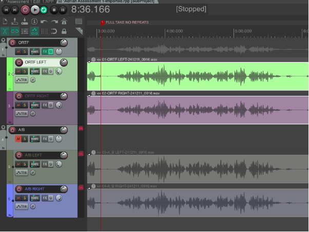

What I’m covering in this article #
This article is written based on work I did at the University of Birmingham for my final year sound recording module. This module focused on the theory and basics of setting up and recording a session, alongside some basic editing techniques.
The assessments for the module consisted of a solo recording session based in the controlled acoustic environment of a studio, and a duet session recorded in the UoB’s Elgar Concert Hall.
In this article I’ll be covering the recording process for a classical recording session, alongside the comping process, and some basic reverb and mixing techniques.
I won’t be covering advanced mixing and mastering in this article.
What goes into a professional recording? #
So what goes into a professional recording? Capturing a performance might often seem like black magic, but the process is actually quite straight forward once you get the hang of things.
The first thing to understand with recording music, is that there is also a considerable amount of artistry in the recording and post proudction processes themselves. There’s all sorts of decisions made both in the recording session and in post production that influence the resulting music. The goal often isn’t to directly capture what you’ve heard exactly, but to create the artist’s vision. A recording engineer, an editor, a mix engineer, or a mastering engineer all put their own artistry and interpretations into the recording to make the captured music larger than life.
Because of this, it’s important to touch base with the project lead (whether that’s the musical artist or their producer) to make sure that your vision of the project doesn’t eclipse their own.
In the real world decisions are often made based on budget and time constraints, but assuming these aren’t a problem here are some considerations to make before the recording session:
Acoustic environment #

Your next decisions for environment are dictated by whether you want real or artificial reverb. If you decide to go the artificial route you’ll be recording in a studio, or acoustically treated space, to get as dry a sound as possible (since all the reverb will be added in post, we actually want to minimize room sound).
Recording in a hall might be your only option if the ensemble is very large. You’ll always want to have a pair of room mics when recording in a hall to capture the reverb of the room.
Both kinds of room have their advantages and challanges to work with. Studio spaces tend to be smaller, and even though using artificial reverb means you have a lot more control over it, sometimes the instrument still sounds strangely dry despite having a considerable amount of reverb. On the flip side you can put your musicians in a much bigger sounding hall than you could ever likely have access to.
Recording in a hall is often more expensive, and complicated to set up, and while hall reverb is more natural, it’s also susceptible to background noise leaking in. When dealing with real reverb you need to be especially careful to make sure the sound has finished decaying between takes, so you don’t end up with weird cuts in the reverb while editing.
Equipment #
The equipment you use depends on what kind of musicician/s and music you’re recording. The equipment needed for a vocal quartet is very different to what is needed for a solo violin, or a jazz band. This is also another rabbit hole when it comes to budget, as microphones become expensive very quickly, so it’s important to know exactly what you need.
If you decide to purchase equipment, remember second hand audio equipment is usually quite a good option (microphones are designed to run for years when handled properly, so even when second hand they should still have a lot of life in them). Renting equipment is also a good option, especially if it’s a one off project.
Equipment needs vary drastically, but a general signal flow is as follows:
graph TB
A(("Microphone (pair)")) --> B("Pre-amp") --> C{"Interface"} --> D("Recording device (computer)")
This can be simplified, such as using a recording device like a Zoom F8 which comes with interface, recording device and pre-amps all bundled in a single box.

Most popular interfaces, or mixing desks also come with pre-amps aswell, so if you’re not looking for the specific sound of a pre-amp (they can quite drastically change the sound of your recording depending on model) your money is more wisely spent on a good interface, than on separate pre-amps.
Microphones #
Microphones come in three main types:
- Condensor
- Dynamic
- Ribbon


There’s endless equipment recommendation lists online, for equipment I’ve used check out my recording session examples here and here.
It’s important to decide how many microphones you’re going to use for each musician. Each microphone is a single mono channel, so if you need to capture stereo sound, you’ll need to use a pair of matching microphones (this is important so that each channel is matched). There are various setups that you can use, which I describe below. If you have enough channels, feel free to use a stereo pair on a soloist, even if you end up only using one channel for them in the end. Grand pianos usually need three, drum kits often use 5. Anything more than a duet and it’s wise to keep the setup simple, with a single mic per musician, as you’ll very quickly become constrained by the number of channels you have available on your interface.
Polar Patterns #
Different microphones have different patterns that they pick sound up in, called polar patterns.

The most commonly used patterns are cardioid, which is good for picking up sound directly in front of the microphone and rejecting sound from all other directions, and omnidirectional, which is used for picking up sound in all directions equally.
Figure 8 can be used to cancel out unwanted sound using a setup called a mid-side pair
Super/hyper cardioid can be good for picking up a bit of room noise, but they’re very situational.
Shotgun is very directional, and so is often used for picking up very specific sound sources.

The next step is to decide where you’re going to place your microphones relative to your musicians. One thing to consider is that your microphone is essentially your listener or audience member, so you’re free to experiment putting the listener in places they could never be during a performance, such as right in the middle of an ensemble, or far away, or inside the piano… the possibilities are endless (though some obviously sound better than others, I personally would never recommend putting your audience behind your performers, that will just sound bad).
Microphones are usually setup in pairs so as to capture stereo sound (a single microphone is a single mono channel). There are three main pairs, arranged with very specific measurements so as to avoid deadzones in the middle of the pair:
AB XY ORTF
An AB pair consists of two parallel omnidirectional mics facing the same direction, and at the same height, spaced 40-60cm apart. These have a quite a wide stereo image (the pickup range), and are very versatile, especially if placed a bit further back from your sound source.

An XY pair consists of two cardioid microphones with their tips (capsules) at 90° from eachother, placed on top of eachother. Their stereo image is narrower, which makes them good for close micing, especially on soloists.

An ORTF pair is rather complicated. It’s again two cardioid mics, but their capsules are 17cm apart, and at an angle of 110°. As such they usually are setup with a special mic bar that has the measurements already set on it. It’s a good middleground between AB and XY, and especially good for piano, if you only have two mics to spair for the piano.

If you have three mics to spair, a better option for a grand piano is a setup called an LCR, or Left Centre Right. It can be good for picking up a balanced stereo image of the entire range of the piano, but it’s absolutely not necessary, more of a luxury if you have a mic to spare.

When setting up room mics, or stage mics in a hall one usually just places a single microphone at either side of the stage. Since these are just picking up reverb from the room, it doesn’t matter if there’s a deadzone in the middle of the “pair” due to it being extremely wide.
For soloists you generally don’t want to position the microphone too close due to what’s called the proximity effect which makes bass frequencies boomier, but also so far away as to capture too much of the room(100cm-150cm is a good rule of thumb).
Recording methods:
There’s different methods for recording, which vary depending on your setup, the music you’re recording and how much work during the session you’re willing to do vs in editing in post.
Multitrack recording is where you’ll record each voice/instrument of your ensemble at a different time (often in a different room), with them listening to a click track or a backing track (or the rest of the performers that have already recorded). This is really good for pop music, or situations where you need to isolate each instrument/instrument group, but for classical musicians it can feel quite limiting to play to a click (we love our rubato).

Another effective recording method is to record the session straight through. Multiple takes are recorded in one continuous recording, which is then later split up into individual takes and comped in post. This is nice especially when there’s rubato involved in the performance, or you’re recording in a situation where you can’t monitor the session (such as in a large concert hall). It does however involve a lot of post work, and relies on meticulous note taking throughout the recording session, running the risk of missing a section that needed another take.
You can comp during the session if you’re recording straight to a DAW, and you’re monitoring from a control room. This isn’t always possible (especially with concert halls), but leads to the least amount of post work, and means you can make sure there’s a good comp before the musician leaves for the day. The last thing you want to do is to call them back in to re-record a section of music.
If you’re not confident comping live during the session another effective method is to use take folders, and audition takes afterwards. This is like a hybrid aproach between comping during the session and recording straight through, as all your takes are in the right place, ready to be auditioned and comped after the fact. This is my prefered method personally.
During the recording session #
So the big day has arrived? Here’s some tips to stay organized during the recording session.
-
Make your musicians comfortable. A comfortable musician will play better. Also hope they’ve prepared well; the recording session isn’t a rehearsal session, and there’s only so much polishing garbage you can do in post (trust me, I’ve tried with my own work, it’s painful), so it’s important to capture a high quality performance from the start.
-
Always do multiple takes. Even if you think they got it on the first try, do at least one more. It’s always better to have extra than to need a take you don’t have. I always aim to have at least two full takes of the entire piece.
-
Make notes during the performance about passages that need redoing. Also make use of markers in your DAW. The more notes you make now, the more time you’ll save relisting to everything. This is especially useful when recording sessions are long. Note things like start times of takes, where the take is in the music, and any errors that need correcting - it’s very useful to have a full score of the piece for this.
-
Keep things moving. It’s easy to get bogged down in a passage that isn’t going well. If you have limited time it’s better to make sure you have the entire piece recorded than a single problematic section.
-
Do takes until you’re happy. If the musicians still aren’t getting it right, keep at it (if you have time). They’ll complain a lot more if the final product is full of mistakes than they will for having to play so much in the session.
Post production #
In post production it’s very easy to lose the plot, so it’s crucial to stay organized, and set deadlines so you don’t end up in production hell.
The main steps in post production are as such:
graph LR
A(Comping) --> B("Clean up") --> C(Mixing) --> D(Mastering)
Comping #
Comping (or compiling) refers to the process of selecting the best parts of the best takes, and stitching them all together to get a complete “best” track. There’s a couple different methods you can use, but they all follow the same basic principle of cutting a good section, and crossfading with other good sections.
You can produce a comp right from the recording session by re-recording sections, replacing the old problematic ones. I personally don’t like this form of comping, even though it significantly reduces the work load, as you end up losing the old material, and especially with more problematic sections things get messy quick.

Swipe comping is a very popular comping method used with take folders. It’s really easy to get a good sounding comp, however things need to be setup right to begin with. Swipe comping works best when the piece is played to a click (things get complicated with tempo changes as not all the takes will line up anymore), and all the takes need to be placed in a take folder (this process varies per DAW used).


A tip for editing in REAPER (my preferred DAW for recording) is to use a sub project. This will render down your project with all your mic channels and mixing into a single track, and keeps things nice and simple in the editing phase, as you’re only working with a single “proxy” audio file. The disadvantages of a method like this are having to wait to render the file each time a change is made in the sub project, and not being able to move any of the audio regions in the sub project without messing up the main project. Things can also get complicated during the clean up stage, as you can’t edit the proxy audio directly, and instead have to edit the sub project, which can consist multiple tracks.
During the comping process try and keep the audio as natural as possible - most of the post FX comes after the clean up stage.
Speaking of clean up:
Clean up #
Clean up refers to cleaning the audio to make it perfect. This involves noise reduction/removal, pitch correction, and if necessary timing correction. After this stage you should have an MVP (minimum viable product). Hopefully there won’t be very much clean up to perform, as clean up often involves destructive audio editing which will degrade your sound quality.
Noise reduction can be done by simple EQs (generally there’s some bass frequencies <500hz that can be safely removed). If there’s a pop or click (squeaky chairs are the bain of my existence) noise removal can be effective. I like to use RX11’s spectral repair tools to directly remove the noise from the source audio, but a similar (and much cheaper) effect can be had using volume automation to mute a small portion of the audio.
For pitch or timing correction use software like Logic Pro’s flex time/pitch or Celemony’s Melodyne. These kinds of software analyze the audio file and present you with a piano roll editor that lets you adjust the pitch/timing of individual notes. Be careful with how much you use these tools as it’s very easy to turn your recording into a robotic (autotune) sound. Small changes can be very effective, so if moving an entire note sounds robotic, try splitting the note in half and only editing half of it. Generally these tools perform poorly when it comes to vibrato, so beware if you want to avoid robotic sounding music.

I put the clean up stage after the comping stage, because a recording session can be very long, and I don’t see the point in cleaning up hours of audio that I’m not actually going to be using.
The next stage is mixing. This involves balancing audio levels, balancing the fequency spectrum (using EQ filters to make sure instruments overlap as little as possible in the frequency spectrum so the sound isn’t “muddy”), and compression if you’re working pop music. It’s at this stage aswell that I’d start using some artificial reverb.
I won’t be going into much detail about mixing here, but there’s some more detail in the examples below. After this stage you should have a completed song that sounds good on your system.
The final stage is mastering, which refers to balancing volume for streaming or physical release. This is crucial as all systems are different. Some people will be listening through bluetooth headphones, some through Hi-Fi speaker setups, so it’s important that the track sounds good on a wide range of listening devices.
After this all that’s left to do is to release your music. Remember to check that you have copyright/permission to release it and credit your artists. These days the best way to release a track is through a distribution service, which will publish to all major streaming platforms at the same time and keep things simple for you. There are cheap/free options out there, but they usually take a cut of any revenue you might make from the song. Distribution services come in all shapes and sizes, choose one that fits your needs. I’d say the one thing to make sure is that you can safely transfer your music from whatever distributor you choose without losing your song streaming stats, that way if your distributor doesn’t work out you’re not locked in with them for the long haul. A good article comparing the different distributors can be found here.
Examples #
Here are two examples from my sound recording module with a full breakdown of the process used to record and edit them. I go into much more detail here about the post editing, so do check them out.
Solo (studio) Duet (concert hall) Reply by Email